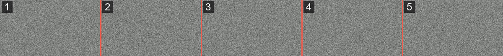

Column
画面に画像や動画を出す方法
スコープをのぞいたときの画面や、必殺技のカットインのように、スクリプトの好きなタイミングで画面いっぱいに画像を出すやり方です。コマ送りにすれば、動画のようにも動かせます。
LZ GUNS のクロスヘアやスコープの画面も、このやり方で出しています。
結論
ui/hud_screen.jsonで、タイトルを表示する部品hud_title_textを上書きし、その中に画像を置く- スクリプトから
/titleで「印」の入った文字を送り、印があるときだけ画像を出す - 動かしたいときは、コマを横に並べた1枚の画像を
flip_bookでコマ送りする
root_panel には足さない
最初に思いつくのは、HUD のいちばん外側の root_panel に画像を足すことですが、これをやると HUD がこわれました。新しい部品を足すのではなく、もとからある hud_title_text を上書きします。
1. hud_title_text を上書きする
{
"namespace": "hud",
"hud_title_text": {
"type": "panel",
"anchor_from": "center",
"anchor_to": "center",
"size": [ "100%", "100%" ],
"layer": 10,
"controls": [
{ "lzc_scope@hud.lzc_scope": {} }
]
}
}上書きしたので、ふつうの /title の文字はもう画面に出ません。タイトルは「画像を出す合図」専用になります。
2. 印があるときだけ画像を出す
"lzc_scope": {
"type": "image",
"texture": "textures/ui/lzc_scope",
"anchor_from": "center",
"anchor_to": "center",
"size": [ "100%", "100%" ],
"keep_ratio": false,
"$update_string": "LZC",
"controls": [ {
"data_control": {
"type": "panel",
"size": [ 0, 0 ],
"property_bag": { "#preserved_text": "" },
"bindings": [
{ "binding_name": "#hud_title_text_string" },
{
"binding_name": "#hud_title_text_string",
"binding_name_override": "#preserved_text",
"binding_condition": "visibility_changed"
},
{
"binding_type": "view",
"source_property_name": "(not (#hud_title_text_string = #preserved_text) and not ((#hud_title_text_string - $update_string) = #hud_title_text_string))",
"target_property_name": "#visible"
}
]
}
} ],
"bindings": [ {
"binding_type": "view",
"source_control_name": "data_control",
"source_property_name": "(not (((#preserved_text - $update_string) - '|S|') = (#preserved_text - $update_string)))",
"target_property_name": "#visible"
} ]
}中の data_control は、LZC で始まるタイトルが来たときに、その文字を #preserved_text に取っておく係です。外側の画像は、取っておいた文字に |S| が入っているときだけ表示されます。
UI の式には「ふくむ」がないので、(文字 - '|S|') = 文字(消しても変わらない=入っていない)の形で調べています。
3. スクリプトから合図を送る
player.runCommand("title @s times 0 1000000 0");
player.runCommand('title @s title "LZC|S|"');消すときは、印のない "LZC" だけを送ります。
画像を何種類も出すときは、全部まとめて送る
クロスヘアとスコープのように、別々の画像をそれぞれのタイミングで出したくなります。このとき、スコープの係が "LZC|S|" だけを送ると、さっきまで出ていたクロスヘアの印が消えてしまいます。
なので、今どの画像を出すかをタグなどで持っておき、送るときは毎回、全部の印をつなげた文字を作り直して送ります。
function sendHud(player) {
let text = "LZC";
if (player.hasTag("lzc_crosshair")) text += "|C|";
if (player.hasTag("lzc_scope")) text += "|S|";
player.runCommand("title @s times 0 1000000 0");
player.runCommand(`title @s title "${text}"`);
}どの係が状態を変えても、この関数を呼ぶようにしておけば、印のとり合いが起きません。
動画のように動かす
コマを並べた1枚の画像を用意して、flip_book のアニメでコマ送りします。
コマは必ず横に並べます。ブロックのフリップブックはコマを縦に並べますが、UI の flip_book は横です。ここをまちがえると動きません。
1コマ目を左はしに置いて、右へ順に並べます。frame_step は1コマの横の長さです。

"lzc_noise_anim": {
"anim_type": "flip_book",
"initial_uv": [ 0, 0 ],
"frame_count": 16,
"frame_step": 480,
"fps": 24,
"reversible": false,
"easing": "linear"
}画像の部品のほうには、1コマの大きさと、このアニメを指定します。
"texture": "textures/ui/lzc_noise",
"uv_size": [ 480, 270 ],
"uv": "@hud.lzc_noise_anim",
"disable_anim_fast_forward": trueこの例は、1コマ 480×270 を16コマで、横の長さは 7680px です。
画像の長さは 16000px くらいが上限なので、コマ数と1コマの横の長さをかけ算して、超えないようにします。たとえば1コマ 500px なら、32コマまでです。
音は画像とは別なので、合図を送るのと同じタイミングで /playsound を鳴らします。
気をつけること
hud_title_text を上書きできるのは、1つのパックだけです。同じことをしている別のパックと一緒に入れると、どちらかの画像しか出ません。両方で使いたいなら、1つのパックの hud_title_text に部品をまとめます。